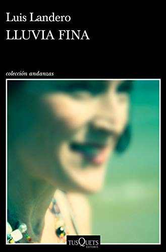

Celebramos el décimo aniversario de la primera edición original de 'El psicoanalista' con una cuidada edición conmemorativa.Incluye un epílogo que John Katzenbach ha escrito especialmente para los lectores en lengua española. «Feliz aniversario, doctor. Bienvenido al primer día de su muerte.» Así comienza el anónimo que recibe el psicoanalista Frederick Starks, y que le obliga a emplear toda su astucia y rapidez para, en quince días, averiguar quién es el autor de esa amenazadora misiva que promete hacerle la vida imposible. De no conseguir su objetivo, deberá elegir entre suicidarse o ser testigo de cómo, uno tras otro, sus familiares y conocidos mueren por obra de un psicópata decidido a llevar hasta el final su sed de venganza. Dando un inesperado giro a la relación entre médico y paciente, John Katzenbach nos ofrece una novela emblemática del mejor suspense psicológico.
En LA ESPOSA PERFECTA (Un Thriller de Suspense Psicológico con Jessie Hunt—Libro Uno), la estudiante de perfilado de criminales Jessie Hunt está convencida de que por fin ha dejado atrás la oscuridad de su pasado. Su marido Kyle y ella se acaban de mudar de un diminuto apartamento en el centro de Los Ángeles a una mansión en Westport Beach. La promoción de Kyle les ha traído más dinero del que pudieran soñar, y Jessie está a punto de concluir satisfactoriamente su Masters en Psicología Forense, el último paso para manifestar su sueño de convertirse en perfiladora de criminales.
En LA CASA PERFECTA (Libro #3), la criminóloga Jessie Hunt, de 29 años, recién salida de la Academia del FBI, regresa para verse acosada por su padre asesino, atrapada en un juego letal del gato y el ratón. Mientras tanto, debe apresurarse a detener a un asesino en un nuevo caso que le lleva hasta las profundidades de los suburbios—y al precipicio de su propia mente. Y se da cuenta de que la clave para su supervivencia depende de que descifre su pasado—un pasado al que no quería volver a enfrentarse.
Tras mucho tiempo sin apenas verse ni tratarse, Gabriel decide llamar a sus hermanas y reunir a toda la familia para celebrar el 80 cumpleaños de la madre y tratar así de reparar los viejos rencores que cada cual guarda en su corazón, y que los han distanciado durante tantos años. Aurora, dulce y ecuánime, la confidente de todos y la única que sabe hasta qué punto los demonios del pasado siguen tan vivos como siempre, trata de disuadirlo, porque teme que el intento de reconciliación agrave fatalmente los conflictos hasta ahora reprimidos. Y, en efecto, la primera llamada de teléfono desata otras llamadas y conversaciones, inocentes al principio y cada vez más enconadas, y de ese modo iremos conociendo las vidas de Sonia, de Andrea, de Horacio, de Aurora, del propio Gabriel y de la madre, y con ellas la historia familiar, desde la infancia de los hijos hasta la actualidad. Tal como temía Aurora, las antiguas querellas van reapareciendo como una lluvia fina que amenaza con formar un poderoso cauce al límite del desbordamiento. Entre Agosto e Hijos de un dios salvaje, Lluvia fina es la novela más trepidante de Luis Landero.
